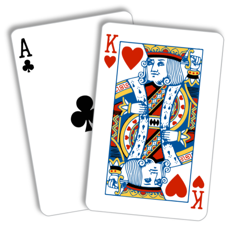

Black Jack in Python
The first project for computer science - Black Jack Game. It was created in python and has over 200 lines of code.

Breathanalyzer with Arduino

The second project was breathanalyzer created with Arduino kit. We had to create an arduino model, write a code and create a case for this device.
Reflection
Reflection on this project. Information about what I could've done differently and what difficulties I faced while creating this project.